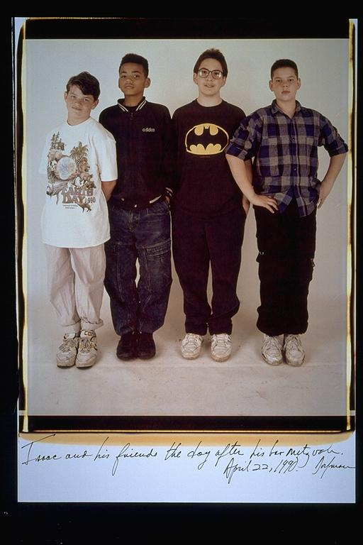

Pals: Boys Who Grew Up Together
elsadorfman.com/pals
Aldo: Rafi always tends to dress differently, or me, Eugene and Isaac are all conformists, whatever. But what this picture reminds me of is Batman. Isaac is wearing that shirt I hope in tribute to all the time we spent waiting in line with his dad to get tickets to see Batman when it first came out. I know they suck now, but the first one was good. We never had a Star Wars, well, besides Reagan's, I mean. But seriously, this was our big movie. This shirt brings a tear to my eye (note: slight sarcasm intended).

elsad@comcast.net